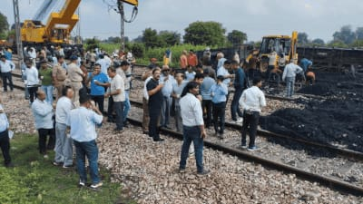

AGRA: Wagons of a goods train derailed near Tupkadih station in Bokaro, Jharkhand, last week, disrupting rail traffic...
"Indian Railways has been grappling with a recent rise in accidents, particularly derailments..."
Over the last five years, there have been 200 major train accidents...
2024 Report
| Month | Train | Date | Died |
|---|---|---|---|
| February | Anga Express | 28 | 2 killed, 20 injured |
| June | Agartala-Kanchanjunga Express | 28 | 9 killed, 41 injured |
Public attention on rail safety intensified after the Balasore rail accident in June 2023...
Northern Railways has recorded the highest number of accidents in the past five years...
For more information click here